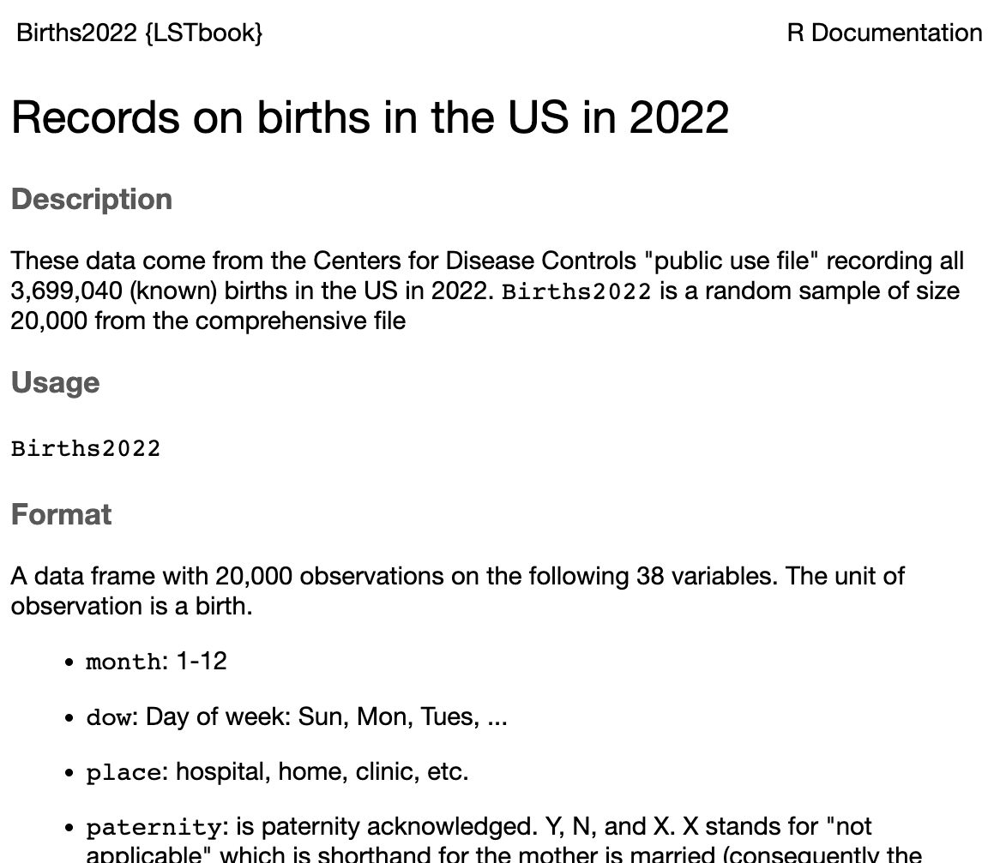
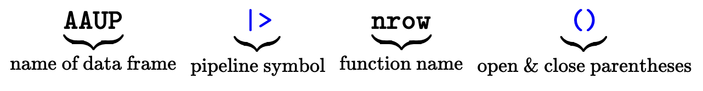
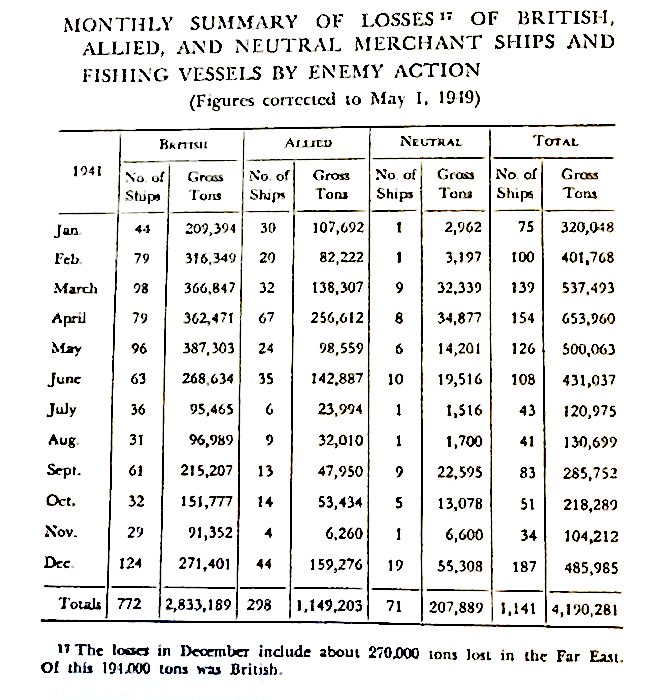

?mosaicData::Galton1 Data frames
The origin of recorded history is, literally, data. Five-thousand years ago, in Mesopotamia, the climate was changing. Retreating sources of irrigation water called for an organized and coordinated response, beyond the scope of isolated clans of farmers. To provide this response, a new social structure – government – was established and grew. Taxes were owed and paid, each transaction recorded. Food grain had to be measured and stored, livestock counted, trades and shipments memorialized.
Writing emerged as the technological innovation to keep track of all this. We know this today because memoranda were incised by stylus on soft clay tablets and baked into permanence. When the records were no longer needed, they were recycled as building materials for the growing settlements and cities. Archaeologists started uncovering these tablets more than 100 years ago, spending decades to decipher the meaning of the stylus marks in clay.
The writing and record-keeping technology developed over time: knots in string, wax tablets, papyrus, vellum, paper, and computer memory. Making sense of the records has always required literacy, deciphering marks according to the system and language used to represent the writer’s intent. Today, in many societies, the vast majority of people have been taught to read and write their native language according to the accepted conventions.
Conventions of record keeping diverge from those of everyday language. For instance, financial transaction records must be guarded against error and fraud. Starting in the thirteenth century, financial accountants adopted a practice—double-entry bookkeeping—that has no counterpart in everyday language.
“Double-entry bookkeeping,” records twice in two different places, in the form of a credit to an account and a debit from another account.
Modern conventions make working with data more accessible and more reliable. Of primary interest to us in these Lessons is the organization provided by a “data frame,” a structure for holding data as exemplified in Figure 1.1.

The row-and-column organization of a data frame is reminiscent of a spreadsheet. However, data frames have additional organizational requirements that typical spreadsheet software does not enforce. The term “tidy data” emphasizes that these requirements are being met.
Each variable must consist of the same kind of individual entries. For example, the
mothervariable consists of numbers: a quantity. In this case, the quantity is the mother’s height in inches. It would not be legitimate for an entry inmotherto be a word or to be a height in meters or something else entirely, for instance, a blood pressure.Each row represents an individual real-world entity. For the data frame shown in Figure 1.1, each row corresponds to an individual, fully-grown child. We use the term “unit of observation” to refer to the kind of entity represented in each row. All rows in a data frame must be the same kind of unit of observation. It would not be legitimate for some rows to individual people while others refer to something different such as a house or family or country. If you wanted to record data on families, you would need to create a new data frame where the unit of observation is a family.
We use the word “specimen” to refer to an individual instance of the unit of observation. A data frame is a collection of specimens. Each row represents a unique specimen.
The unit of observation in Figure 1.1 is a full-grown child. The fifth row in that data frame refers to a unique young woman in London in the 1880s (whose name is lost to history). By using the word “specimen” to refer to this woman, we do not mean to dehumanize her. However, we need a phrase that can be applied to a single row of any data frame, whatever its unit of observation might be: a shipping container, a blood sample, a day of ticket sales, and so on.
The collection of specimens comprised by a data frame is often a “sample” from a larger group of the units of observation. Galton did not measure the height of every fully-grown child in London, England, the UK, or the World. He collected a sample from London families. Sometimes, a data frame includes every possible instance of the unit of observation. For example, a library catalog lists comprehensively the books in a library. Such a comprehensive collection is called a “census.”
Example: New-born babies
The US Centers for Disease Control (CDC) publishes a “public use file” each year, a data frame where the unit of observation is an infant born in the US. (The many variables include the baby’s weight and sex, the mother’s age, and the number of prenatal care visits during the pregnancy.) The published file for 2022 contains 3,699,040 rows; that is the number of (known) births in 2022. As such, the CDC data constitutes a census rather than a sample.
Types of variables
Each column of a data frame is a variable. The word “variable” is appropriate because the entries within a variable vary one from one row to another. Other words with the same root include “variation,” “variety,” and even “diversity.”
Data-frame variables come in two fundamental types:
The distinction between quantitative and categorical variables is fundamental to statistical work. You should be able to discern whether a variable is categorical or quantitative from a glance at a data frame.
Quantitative variables record an “amount” of something. These might just as well be called “numerical” variables.
Categorical variables typically consist of letters. For instance, the
sexvariable in Figure 1.1 contains entries that are either F or M. In most of the data we work with in these Lessons, there is a fixed set of entry values called the levels of the categorical variable. The levels ofsexare F and M.
We are not doing full justice to the variety of possible variable types by focusing on just two type: quantitative and categorical. You should be aware that there are other kinds, for example, photographs or dates.
Example (cont.): The CDC births data frame
Among the many variables in the CDC public use file of births are place and diabetes_gest, which record the place of birth and whether the mother developed gestational diabetes.
The place variable is categorical, with these levels:
- “hospital”
- “home (intended)”
- “home (unintended)”
- “freestanding”
- “other”
The diabetes_gest variable has two levels: N or Y.
The codebook
How are you to know for any given data frame what constitutes the unit of observation or what each variable is about? This information, sometimes called metadata, is stored outside the data frame. Often, the metadata is contained in a separate documentation file called a “codebook.”
To start, the codebook should make clear what is the unit of observation for the data frame. For instance, we described the unit of observation for the data frame shown in Figure 1.1 as a fully grown child. This detail is important. For instance, each such child—each specimen—can appear only once in the data frame. In contrast, the same mother and father might appear for multiple specimens, namely, the siblings of the child.
In the CDC data frame, the unit of observation is a newborn baby. If a birth resulted in twins, each of the two babies will have its own row. In contrast, imagine a data frame for the birth mothers or another for prenatal care visits. Each mother could appear only once in the birth-mothers frame, but the same mother can appear multiple times in the prenatal care data frame.
For quantitative variables, the relevant metadata includes what the number refers to (e.g., mother’s height or baby’s weight) and the physical units of that quantity (e.g., inches for height or grams for weight).
For categorical variables, the metadata should describe the meaning of each level in as much detail as necessary.
Example (cont.): CDC births codebook
The codebook for the CDC data is a PDF document entitled “User Guide to the 2022 Natality Public Use File.” You can access it on the CDC website.
Accessing data frames
Most statistics software, including R, makes it easy to access data frames stored as files in any of a variety of formats. (For examples, see
Almost all the data frames used as examples or exercises in these Lessons are stored in files provided by R software “packages” such as {LSTbook} or {mosaicData}. The data frame itself is easily accessed by a simple name, e.g., Galton. The location of the data frame is specified by the package name as a prefix followed by a pair of colons, e.g. mosaicData::Galton. A convenient feature of this system is the easy access to documentation by giving a command consisting of a question mark followed by the package-name::data-frame-name, e.g.
Computing with data frames
Lessons 2, 3 & 4 cover how to make informative graphics that give an overview of the contents in a data frame. Lesson 5 introduces commands for manipulating the contents of a data frame to put them in a more useful form for the data graphics or data summary task at hand.
This Lesson shows you how to access data frames and their documentation and how to perform simple tasks such as listing the variable names or glimpsing a few rows of a data frame.
There are many software systems for working with data frames. Commonly available spreadsheet software, while suited to some data-entry and data-summarizing tasks, is surprisingly limited when it comes to statistical thinking. The system we will use, RStudio, is one of a handful used by data science professionals. It’s available free both as an online, browser-based platform and for installation on a laptop computer or computer server.
Much of the statistical work you do in RStudio consists of writing commands in the R language. The word “language” is offputting to many people, associating it as they do with natural languages such as Chinese or Spanish, mastery of which takes time and much work. Fortunately, you do not have to learn the R language; you need only a couple dozen R expressions to work through all these Lessons.
If you are on your own, the instructions below provide a quick way to get started with minimal effort.
If you are a student using these Lessons as part of a class, check with your instructor who may already have set up a way for you to access RStudio.
We continue here under the assumption that you have already been shown how to install and access RStudio by an instructor or other mentor. That person will have arranged to install some additional software written for these Lessons, particularly the {LSTbook} package.
Each time you open RStudio, load the {LSTbook} package using this command at the R prompt in the “console” tab.
library(LSTbook)
Starting out with R via
posit.cloud
Note: Otherwise …
posit.cloud is a “freemium” web service. The word “freemium” signals that you can use it for free, up to a point. Fortunately, that point will suffice for you to follow all of these Lessons.
- In your browser, follow this link. This will take you to
posit.cloudand, after asking you to login via Google or to set up an account, will bring you to a page that will look much like the following. (It may take a few minutes.)

On the left half of the window, there are three “tabs” labelled “Console,” “Terminal,” and “Background Jobs.” You will be working in the “Console” tab. Click in that tab and you will see a flashing
|cursor after the>sign.Give this command, exactly as written, and press return:
library(LSTbook)Now you are ready to go.
All of your work with R will consist of giving commands at the > prompt and pressing return. Possibly the simplest of all commands is merely the name of a data frame. For instance, the {LSTbook} package provides, among many others, a data frame named AAUP. Try this as a command:
AAUPThe result of such a command will be a print-out of the first several rows and columns of the data frame. Some of the data frames provided by {LSTbook} have a couple of dozen rows, others have tens of thousands. Printing out the first few rows of a data frame is useful since it shows the variable names and you can see whether each variable is quantitative or categorical.
To see the codebook for a data frame, simply precede the name with the ? character, for instance:
?Births2022

?Births2022. When displayed in the RStudio Help tab, you can scroll through the descriptions of all 38 variables.
RStudio arranges for the codebook to be displayed in the “Help” tab. This allows you to scroll through the documentation, follow web links (if any), and keep the names of the variables displayed in the Help tab while you write commands in the Console tab.
Commands you will use in these Lessons will often start with the name of a data frame followed a “pipeline symbol |> which is then followed by a description of the action you want to perform. Let’s consider two simple actions:
- Count the rows in the data frame:
AAUP |> nrow()[1] 28- List the names of the variables.
AAUP |> names()[1] "subject" "acsal" "fem" "unemp" "nonac" "nonacsal" "licensed"These two commands have a similar structure involving four elements.

There are two names in this command: the name of a data frame and a “function” name. The function name is how you specify what you want to calculate from the data frame.
There are also two bits of punctuation:
the pipeline symbol
|>, which connects the data frame to the function.a pair of open and close parentheses immediately following the function name. Every time you use a function the function name will be followed by parentheses.
Tables versus data frames
You may notice that the displays of data frames printed in this book are given labels such as Table 1.1. It is natural to wonder why the word “table” is used sometimes and “data frame” other times.
In these Lessons we make the following distinction. A “data frame” stores values in the strict format of rows and columns described previously. Data frames are “machine readable.”
The data scientist working with data frames often seeks to create a display intended for human eyes. A “table” is one kind of display for humans. Since humans have common sense and have learned many ways to communicate with other humans, a table does not have to follow the restrictions placed on data frames. Tables are not necessarily organized in strict row-column format, can include units for numerical quantities and comments. An example is the table put together by Francis Galton (Figure 1.3) to organize his measurements of heights.

We make the distinction between a data frame (for data storage) and a table (for communicating with humans) because many of the operations discussed in later lessons serve the purpose of transforming data frames into human-facing displays such as graphics (Lesson 2) or tables (Section 6.7.)
Often, a literal display of a data frame may seem inefficient, for instance this view of the Galton dataframe which was constructed from Figure 1.3.
Galton| family | father | mother | sex | height | nkids |
|---|---|---|---|---|---|
| 1 | 78.5 | 67.0 | M | 73.2 | 4 |
| 1 | 78.5 | 67.0 | F | 69.2 | 4 |
| 1 | 78.5 | 67.0 | F | 69.0 | 4 |
| 1 | 78.5 | 67.0 | F | 69.0 | 4 |
| 2 | 75.5 | 66.5 | M | 73.5 | 4 |
| 2 | 75.5 | 66.5 | M | 72.5 | 4 |
| 2 | 75.5 | 66.5 | F | 65.5 | 4 |
| 2 | 75.5 | 66.5 | F | 65.5 | 4 |
| 3 | 75.0 | 64.0 | M | 71.0 | 2 |
| 3 | 75.0 | 64.0 | F | 68.0 | 2 |
It may seem that the data frame is inefficient, for example repeating the heights of mother and father for all the siblings in a family. But this view of efficiency relates to the use of paper and ink by a table; the computer entity requires a different view of efficiency.
Exercises
Exercise 1.1 bear-ride-pants
The US Department of Transportation has a program called the Fatality Analysis Reporting System. FARS has a web site which publishes data. Figure 1.4 shows a partial screen shot of their web page.

For several reasons, the table is not in tidy form.
Some of the rows serve as headers for the next several rows, but don’t contain any data. Identify several of those headers. Answer: “Motor vehicle traffic crashes”, “Traffic crash fatalities”, “Vehicle occupants”, “Non-motorists”, “Other national statistics”, “National rates: fatalities”
In tidy data, all the entries in a column should describe the same kind of quantity. You can see that all of the columns contain numbers. But the numbers are not all the same kind of quantity. Referring to the 2016 column:
- What kind of thing is the number 34,439? Answer: A number of crashes
- What kind of thing is 18,610? Answer: A number of drivers
- What kind of thing is 1.18? Answer: A rate: fatalities per 100-million miles.
In tidy data, there is a definite unit of observation that is the same kind of thing for every row. Give an example of two rows that are not the same kind of thing. Answer: For example, “Registered vehicles” and “Licensed drivers”. The first is a count of cars, the second a count of drivers.
Identify a few rows that are summaries of other rows. Such summaries are not themselves a unit of observation. Answer: “Sub Total1”, “Sub Total2”, “Total**“
Exercise 1.2 camel-drive-roof
There are several small, example data frames in the datasets package. Look at the Seatbelts data frame using the View() function and the name of the object as an argument. You may also need to reference the documentation using help(). (Hint: refer to the data frame using the double-colon notation to include the package name, that is, datasets::Seatbelts.)
- What is the meaning of the
frontvariable? Answer: The number of front seat passengers killed or seriously injured. - How many specimens are there? Answer:
nrow(Seatbelts) - What is the real-world meaning of a row, that is, what is the unit of observation? Answer: A calendar month.
Exercise 1.3 cat-bring-shirt
What’s not tidy about this table?
president |
in office |
number of states |
|---|---|---|
| Lincoln, Abraham | 1861-1865 | it depends |
| George Washington | 1791-1799 | 16 |
| Martin Van Buren | 1837 to 1841 | 26 |
Answer:
The table would be tidier if …
- The values of the
presidentvariable were all in the same form. As it is, the entry for Lincoln is in the form last-name, first-name, while the other values are not. It might also be appropriate to divide the name into two variables: given name and surname. For instance, “Van” is not the middle name of Martin Van Buren; it’s part of his surname “Van Buren.” - The
in officevariable contains two numbers, with different punctuation between them.
- The
number of statesis not a number in Abraham Lincoln’s case. (The situation changed rapidly during the US Civil War.) All the values in a variable should be the same kind of thing.
A bit more detail — one rule for tidy data is that all of the values for a variable should be the same kind of thing. You could argue that “1861-1865” and “1837 to 1841” are the same kind of thing: a set of characters that can be interpreted by a person. It’s much better, in general, if numerical quantities (like the year) are represented as numbers.
Re-write the table in a tidy form. Take care to render the information about years and about the number of states as numbers.
Answer:
There are several reasonable possibilities, for instance:
first_name |
last_name |
start |
end |
n_states |
|---|---|---|---|---|
| Abraham | Lincoln | 1861 | 1865 | 26 |
| George | Washington | 1791 | 1799 | 16 |
| Martin | Van Buren | 1837 | 1841 | 26 |
In addition to the data table, the codebook could specify that n_states refers to the number of states when the President left office.
Exercise 1.4 child-talk-candy
The codebook for several data tables relating to airports, airlines, and airline flights in the US is published in the nycflights13 package. The documentation for the airports data frame from that package can be read here. According to the documentation:
- How many variables are there?
- What do the cases represent?
- For each variable, make a reasonable guess about whether the values will be numerical or categorical.
Answer:
Each case is an airport. There are seven variables: faa (categorical), name (categorical), lat (numerical), lon (numerical), alt (numerical), tz (more or less numerical: data about times can be complicated), dst (categorical)
Exercise 1.5 kangaroo-see-dress
The name of the ggplot2::msleep data frame doesn’t say much about the contents. Look at the documentation using the ?ggplot2::msleep and with the View(ggplot2::msleep) to see the contents.
- What does the “m” in the name
msleeprefer to? Answer: “m” as in “mammals.” - What is the meaning of the
brainwtvariable? Answer: The help file specifies it as the “brain weight in kilograms.” - How many cases are there? Answer:
nrow(msleep) - What is the real-world meaning of a case? Answer: A kind of mammal, e.g. a biological genus and order.
- What are the levels of the
vorevariable? Answer: carni, omni, herbi, NA, insecti
Exercise 1.6 snake-come-closet
Look at the documentation for the mosaicData::CPS85 data table. From reading that documentation, what is the meaning of “CPS”? Answer: Current Population Survey
Exercise 1.7 owl-say-knife
Here is an excerpt from the baby-name data set.
| year | sex | name | n | prop |
|---|---|---|---|---|
| 1970 | F | Lakeitha | 19 | 0.0000104 |
| 1973 | F | Helena | 189 | 0.0001216 |
| 1975 | M | Torey | 62 | 0.0000382 |
| 1978 | F | Cathrine | 47 | 0.0000286 |
| 1980 | F | Enriqueta | 8 | 0.0000045 |
| 1982 | F | Marelyn | 5 | 0.0000028 |
| 1984 | M | Dimitrius | 14 | 0.0000075 |
| 1986 | M | Penn | 7 | 0.0000036 |
Consider these five entities, that appear in the table shown above (a) through (e):
Taffyb)yearc)sexd)namee)n
For each, choose one of the following:
- It’s a categorical variable.
- It’s a quantitative variable.
- It’s the value of a variable for a particular case.
Answer:
Variable names always appear in the header of the data frame; values are the body of the frame.
Taffyis a value, not a variable, so (3)yearis quantitative, so (2)sexis categorical, so (1)nameis categorical, so (1).nis quantitative, so (2).
Exercise 1.8 fox-fall-book
List what’s not tidy about this table.

Answer:
- Units ought to be in the codebook not the data frame.
- The “length of year” variable is in a mixture of units. Some rows are (Earth) days, others are (Earth) years.
- The numbers have commas, which are intended for human consumption. Data tables are for machine consumption and the commas are a nuisancwe.
- The \(\frac{1}{4}\) in the “length of year” column is not a standard computer numeral. Write 365.25 instead.
Exercise 1.9 pine-hit-pants
Table 1.2 is a re-organization and simplification of the data in Figure 1.4 (in Exercise Exercise 1.1) about motor-vehicle related fatalities in the US. (Only part of the data is shown.)
| year | crashes | drivers | passengers | unknown | miles | resident_pop |
|---|---|---|---|---|---|---|
| 2016 | 34439 | 18610 | 6407 | 79 | 3174 | 323128 |
| 2015 | 32539 | 17666 | 6213 | 71 | 3095 | 320897 |
| 2014 | 30056 | 16470 | 5766 | 71 | 3026 | 318563 |
- In the re-organized table, what is the unit of observation? Answer: a year
- Is the re-organized table tidy data?
Answer:
Yes. (a) There is a well-defined unit of observation that is the same kind of thing for each row. (b) The values for any given variable are also the same kind of thing. For instance, drivers is the number of drivers, resident_pop is the number of people in the national population.
- For the purpose of this exercise, one of the numbers in Table 1.2 has been copied with a small error. To see which it is, you’ll have to refer to Figure 1.4. Find that number and tell:
- The quantity presented in the variable
milesis not actually in miles. It has other units. Referring to Figure 1.4 …- What are the actual units? Answer: Billions of miles.
- Where should the information in (a) be documented? Answer: In the meta-data (codebook) for the table.
Exercise 1.10 lion-drink-sofa
The table below is a presentation intended for a human reader. Even though it is neatly organized, it is not tidy data.

In tidy data, each row must be the same kind of unit of analysis. Each row, but one, corresponds to a month of 1941. What is the row that is not a month of 1941? Answer: “Totals” is not a month of the year.
Are the variable names unique? Answer: There are four columns with the same title, “Gross Tons”. Similarly four columns are labelled “No. of Ships.” You could make the labels unique by prepending them with the terms “British,” “Allied,” and so on.
Two of the columns contain redundant data from the other columns. Which columns are these? Answer: The total number of ships and total tons.
Imagine a data frame where the unit of observation is a ship.
- How many rows would the data frame have? Answer: 1141, the total number of ships.
- What would the variables need to be in this imagined data frame in order to capture all of the data in the presentation table? Answer: Ship tonnage, country, month sunk c. The footnote refers to losses in December 1941 in the Far East, when Japan entered the war. How would you incorporate the information in the footnote into the imagined data frame? Answer: Add a variable “location.”
As you will see, with “data wrangling” it is easy to construct summary tables such as the one in Figure 1.5 from “raw data” as described in (4). But suppose you wanted to translate the information in the table into a tidy form with just four variables? What would these variables be? Answer: month,country,number of ships, tons
Exercise 1.11 sheep-stand-drawer
The meta-data for Table 1.2 (in Exercise 1.9) should include a description of each variable, its units, and what it stands for. Write such a description for the variables crashes and resident_pop. You can refer to Figure 1.4 (in Exercise 1.1) for information.
Answer:
crashes– the number of motor-vehicle accidents in one year which resulted in one or more fatalities. Units: number of accidentsresident_pop– the population of the US in one year. Units: 1000s of people.
Exercise 1.12 eagle-spend-gloves
Glaucoma is a disease of the eye that is a leading cause of blindness worldwide. For those people with access to good eye health care, a diagnosis of glaucoma leads to treatment as well as monitoring of the possible progression of the disease. There are many forms of monitoring. One of them, the visual field examination, involves making measurements of light sensitivity at 54 locations arrayed across the retina. The data frame shown below (provided by the womblR R package) records the light sensitivity for one patient at each of the locations. Data from two visits – an initial visit marked 1 and a follow-up visit marked 2 which occurred 126 days after the initial visit – are contained in the data frame.
| location | day | visit | sensitivity |
|---|---|---|---|
| 1 | 0 | 1 | 25 |
| 1 | 126 | 2 | 23 |
| 2 | 0 | 1 | 25 |
| 2 | 126 | 2 | 23 |
| 3 | 0 | 1 | 24 |
| 3 | 126 | 2 | 24 |
| 4 | 0 | 1 | 25 |
| 4 | 126 | 2 | 24 |
| 5 | 0 | 1 | 26 |
| 5 | 126 | 2 | 17 |
| ... and so on for 108 rows altogether. |
- What is the unit of observation? Answer: a single location on a single visit
- Suppose a third visit was made and the new data were included in the table.
- How many columns would the revised table include? Answer: The extended table will have the same four columns.
- How many rows would the revised table include? Answer: There are 54 rows for each visit. That’s why there are 108 rows in the original table. The revised table will have 54 x 3 = 162 rows.
- Note that
dayandvisithave a very simple relationship. Construct a separate table that has all the information relatingdaytovisit. The unit of observation should be “a visit”.
Answer:
It will be a very small table. The unit of observation is “a visit” and there are only two visits, so there will be only two rows.
| visit | day |
|---|---|
| 1 | 0 |
| 2 | 126 |
Each
locationis a fixed point on the eye’s retina that can be identified by (x, y) coordinates. Here is a map showing the position of each location. Notice that location 1 has position (4, 1) and location 2 has position (5, 1). Imagine a data frame that records the position of eachlocation.- How many columns would the data frame have and what would be sensible names for them? Answer:
location,x, andy - How many rows would the data frame have? Answer: There are 54 locations so there will be 54 rows in the data frame.
- Write down the data table for positions 1, 2, 3, 4, 5, and 6.
- How many columns would the data frame have and what would be sensible names for them? Answer:

Answer:
| location | x | y |
|---|---|---|
| 1 | 4 | 1 |
| 2 | 5 | 1 |
| 3 | 6 | 1 |
| 4 | 7 | 1 |
| 5 | 3 | 2 |
| 6 | 4 | 2 |
| ... and so on for 54 rows altogether. |
Exercise 1.13 data-galton-table
Historians have access to the physical notebook in which Francis Galton originally recorded the data on heights shown in Table 1.1. Galton’s data is given as tables: intended for human eyes. (Galton worked well before the invention of modern computing.)
Here is part of Galton’s notebook holding the height data table:
Describe the ways in which Galton’s data organization differs from that of a data frame.
Exercise 1.14 data-natal-unit
The data frames natality2014::Natality_2014_100K and mosaicData::Births78 relate to babies born in 2014 and 1978 respectively. They have utterly different units of observation.
What are the units of observation of each of these two data frames? (Hint: Look at the documentation for each of them using the
?command described in Section 1.2.)What are the levels of the categorical variable
wdayinBirths78? (Hint: Usehead()orView().)One deficiency in the documentation of
Natality_2014_100Kis that the documentation for variabledwgt_rdoes not say what units (if any) the values are in. The values are numbers in the range 100 to 400. To judge from the documentation, what are the units ofdwgt_r?
Exercise 1.15 Q01-103
In the text, we stated that the “unit of observation” of the dataframe shown in Table 1.1, is a “individual, fully grown person.”
Suppose that a devil’s advocate claimed that this is incorrect, and that the unit of observation is really a family, not an individual. What can you point to in the data frame to argue the point?
Exercise 1.16 Q01-105
The text states that “Table 1.1 shows part of a data frame.” The nature of data frames is that there are two completely distinct ways that data frame might be extended to include more data. What are they?
Exercise 1.17 Q01-106
The table below is from a so-called “population schedule” from the 1940 US Census. Column 1 indicates that the people listed live on N. Nevada Street. Columns 8 and 9 list the names of the individual people and their role in the household.

In 1940, principles of data organization were primitive. Using modern principles, raw data such as this would be arranged so that the order of the rows does not matter.
Explain why, in the 1940 table, the order of rows makes a big difference. For example, consider what would be changed about the data if, say, row 42 were moved to be between rows 47 and 48.
Answer: If row 42 were moved down by six rows, Louisa W. Service would become Louisa W. Platt, Douglas H Platt would become a bigamist with two wives, and William C Service would become a single parent! That’s inconsistent with the actual facts.
Exercise 1.18 Q01-107
Using your web browser, open this link in a new tab: https://www.mosaic-web.org/go/datasets/engines.csv.
Depending on how your browser is set up, you will either be directed to a web page showing a data frame about engines or the browser will download a file named “engines.csv” onto your computer.
The .csv suffix on the file name indicates that the file stored at the address https://www.mosaic-web.org/go/datasets/engines.csv is in a format called “comma separated values.” The CSV format is a common way to store spreadsheet files.
In these Lessons most data frames will be accessed in a single step, by name. However, in professional work, data is stored in computer files or on the interweb. For such data, two steps are needed to access the data from within R.
Step 1. Read the file into R, translate the contents into the native R format for data frames, and store the data frame under a name. For a CSV file, an appropriate R function to read and translate the file is readr::read_csv(). As an argument to the function, give the address of the file, making sure to enclose the address in quotation marks: "https://www.mosaic-web.org/go/datasets/engines.csv". This will cause readr::read_csv() to access the web address, then copy and translate the contents into an R format format for data frames. Use the storage arrow <- to store the data frame under the name Engines.
Step 2. Use the storage name, in this example Engines, to access the data frame from within R.
Your task: Read in the “engines.csv” file to R as a data frame, storing it as Engines. Then use nrow() to calculate the number of rows in the data frame. In addition, use names to see the variable names.
Exercise 1.19 Q01-108
Many organizations, such as government agencies, provide access to data collected during their normal operations. For instance, New York City has an “open data” site that, among many other data frames, shows parking violations in the city over the last several years.
Using your web browser, go to the front page for the parking violation data: https://data.cityofnewyork.us/City-Government/Open-Parking-and-Camera-Violations/nc67-uf89. The front page provides several resources about the data, as well as a small preview of a handful of rows of the data frame. (Don’t try to read the data into R; it’s too big to be easily handled on a laptop computer.) Looking at the front page, answer these questions:
How many rows are in the data frame? Answer: This depends on the date you look at the data, but as of December 2023, there were over 107 million rows!
The third column is labelled “License Type.” Only two types—
PASandCOM—are shown in the first page of the data preview. Scroll down through the data preview until you have found three other license types. Which ones did you find? Answer: OMS, OMR, OMT appear within the first few pages.According to the front page, the unit of observation is an “Open Parking and Camera Violations [sic] Issued.” (Actually, the unit is a single violation.) The front page doesn’t use the term “unit of observation.” What term does it use instead? Answer: “Each row is a …”
Exercise 1.20 Q01-104
The unit of observation in the mosaicData::KidsFeet data frame is a 3rd- or 4th-grade student in the elementary school attended by a statistician’s daughter. You can see the first few rows by giving the R command
| name | birthmonth | birthyear | length | width | sex | biggerfoot | domhand |
|---|---|---|---|---|---|---|---|
| David | 5 | 88 | 24 | 8.4 | B | L | R |
| Lars | 10 | 87 | 25 | 8.8 | B | L | L |
| Zach | 12 | 87 | 24 | 9.7 | B | R | R |
| Josh | 1 | 88 | 25 | 9.8 | B | L | R |
| Lang | 2 | 88 | 25 | 8.9 | B | L | R |
| Scotty | 3 | 88 | 26 | 9.7 | B | R | R |
For each variable, say whether “categorical” or “numerical” gives the better description of the variable’s type.
The
birthmonthandbirthyearvariables are written with numerals, but this is due to deficiencies in the software used to record the data in the 1990s. Describe at least one of the ways in whichbirthmonthdoes not behave like a number. (Hint: Is 12/1987 close or far from 01/1988?)
Exercise 1.21 kitten-drink-sofa
The data table below records activity at a neighborhood car repair shop.
| mechanic | product | price | date |
|---|---|---|---|
| Anne | starter | 170.00 | 2019-01-12 |
| Beatrice | shock absorber | 78.42 | 2019-01-12 |
| Anne | alternator | 385.95 | 2019-01-12 |
| Clarisse | brake shoe | 39.50 | 2019-01-12 |
| Clarisse | brake shoe | 39.50 | 2019-01-12 |
| Beatrice | radiator hose | 17.90 | 2019-02-12 |
The codebook for a data table should describe what is the unit of observation. For the purpose of this exercise, your job is to comment on each of the following possibilities and say why or why not it is plausibly the unit of observation.
a day. Answer: There must be more to it than that, since the same date may be repeated with different values for the other variables.
a mechanic. Answer: No. The same mechanic appears multiple times, so the unit of observation is not simply a mechanic.
a car part used in a repair. Answer: Could be, for instance if every time a mechanic installs a part a new entry is added to the table describing the part, its price, the date, and the mechanic doing the work.